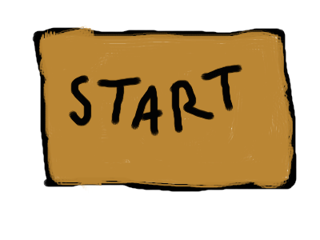
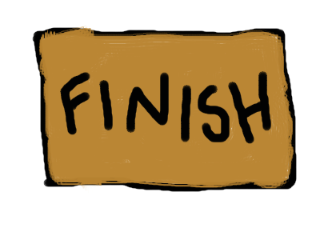

This is a cat. It must get from the  mat to the  mat in each room.
This is a wall. The cat cannot step on this type of block.

This is a tile. The cat leaves paw prints on each tile that it walks on. Since the cat has a strong dislike for its owners, it must leave muddy paw prints on every single tile in the room.
However, the cat can only step on each tile once.
Your job is to navigate the room by stepping on every tile from START to FINISH. Use the arrow keys.